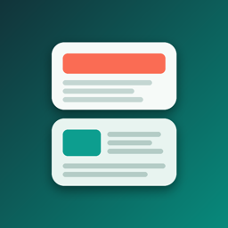

TwinfoldTwo pages. One fold.
Twinfold is a web browser built for iPhone Duo: one page above the fold, another below, or side by side. On any other iPhone, the two pages share the screen.
- Two pages at once, split exactly at the fold (or wherever you drag the handle).
- Tabs in each pane, private tabs, and a long-press to open any link in the other pane.
- Pairs: save two pages that go together and open both in one tap, even from the Home Screen icon.
- Bookmarks (import them from another browser), history, find on page, desktop sites.
- Blocks ads and trackers. No account, no server, no analytics.
Help
How do I switch between one and two pages?
Tap the split button in the bottom bar. On an unfolded iPhone Duo, Twinfold opens two pages by default; on the cover screen it shows one.
Tap the split button in the bottom bar. On an unfolded iPhone Duo, Twinfold opens two pages by default; on the cover screen it shows one.
Which pane does the address bar control?
The active one, outlined in teal. Tap a pane to make it active.
The active one, outlined in teal. Tap a pane to make it active.
How do I open a link in the other pane?
Touch and hold the link, then choose Open in Other Pane.
Touch and hold the link, then choose Open in Other Pane.
How do I import my bookmarks?
Export them from your other browser as an HTML file (on a Mac, Safari: File > Export > Bookmarks), save it to Files, then in Twinfold open Bookmarks and History > ••• > Import Bookmarks.
Export them from your other browser as an HTML file (on a Mac, Safari: File > Export > Bookmarks), save it to Files, then in Twinfold open Bookmarks and History > ••• > Import Bookmarks.
Questions, bugs or ideas: write to hfreecsapple@gmail.com.